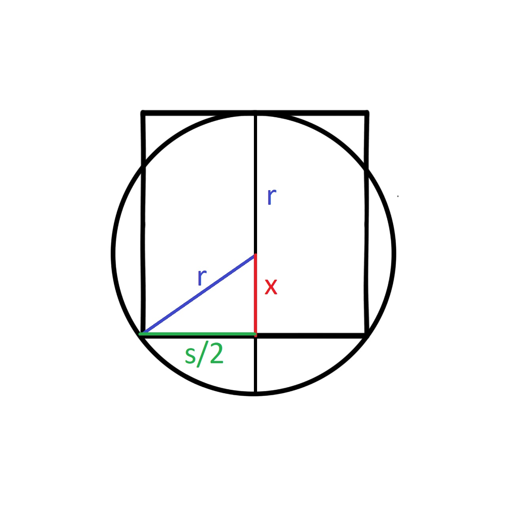

Which Shape has the larger perimeter: the square or the circle?
Let the length of the square's side be s and the radius of the circle be r.
x+r=sx2+(2s)2=r2 Now we use (1) to substitue x so we only have s and r in (2).
(s−r)2+(2s)2=r2 s2−2sr+r2+4s2=r2 45s2−2sr=0 45s2=2sr 45s=2r 85s=r Now, the perimeter of the square is:
4s and the circumference of the circle is:
2πr=2π85s≃3.9s So, the perimeter of the square is slightly larger than the circumference of the circle.
problem source: mathigon.com